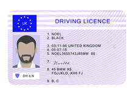
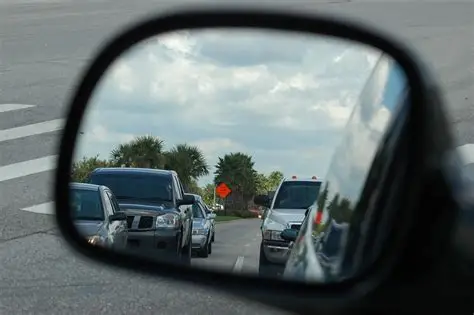
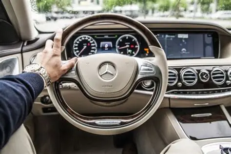
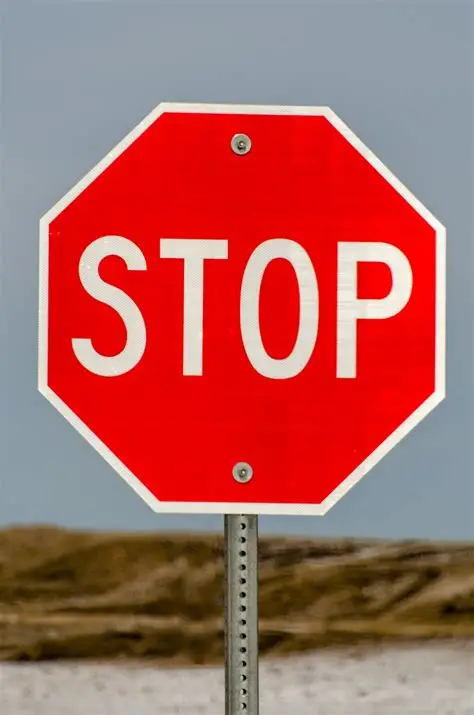

[Simplified] How to be a safe driver!
Step 1: Always bring offical licenses and other relating documents before driving.
Step 2: Adjust seat and mirrors to your liking, get comfortable and be able to see the font hood.
Step 3: Always have hands on 9:00 and 3:00 position on the wheel.
Step 4: Green means go, yellow means slow down and red means stop.
Step 5: Always stop on stop signs and check all directions before making a right turn on red.